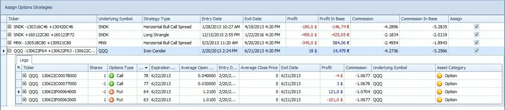

Options trading can be a highly rewarding activity, but it requires careful planning and disciplined execution.
One of the most effective ways to approach options trading is by developing a comprehensive trading plan and
keeping a trading journal.
In this chapter, we will discuss the key elements of a trading plan and the importance of maintaining a trading
journal.

ELEMENTS OF A TRADING PLAN
A trading plan is a written document that outlines your trading goals, strategies, and risk management techniques. A
good trading plan should include the following elements:
1. Trading Goals:
Your trading goals should be specific, measurable, achievable, relevant, and time-bound (SMART). For instance,
your goal could be to earn 10% return on investment every month for the next 6 months.
2. Trading Strategies:
Your trading strategies should include your approach to analyzing the markets, identifying opportunities, and
executing trades. Your strategies should be based on your trading goals and risk tolerance.
3. Risk Management:
Your risk management plan should outline how you will manage risk in your trading. This includes setting stop-loss
orders, position sizing, and diversification.
4. Trading Schedule:
Your trading schedule should outline when you will trade and for how long. This will help you manage your time
effectively and avoid emotional trading decisions.
5. Performance Metrics:
Your performance metrics should measure your progress towards achieving your trading goals. This includes your
win/loss ratio, average return on investment, and maximum drawdown
IMPORTANCE OF A TRADING JOURNAL
A trading journal is a record of all your trades, including entry and exit points, position size, and profit or loss. A
trading journal serves as a valuable tool for improving your trading performance by providing insights into your
strengths and weaknesses.
Here are some reasons why you should maintain a trading journal:
1. Accountability
A trading journal helps you take responsibility for your trading decisions. When you document your trades, you
become more aware of your actions and their impact on your performance.
2. Learning
A trading journal allows you to learn from your mistakes and successes. By reviewing your trades, you can identify
patterns and adjust your strategies accordingly.
3. Goal Setting
A trading journal helps you set realistic trading goals based on your performance. By tracking your progress, you
can adjust your goals and develop strategies to achieve them.
4. Discipline
A trading journal promotes discipline by keeping you focused on your trading plan and strategies. When you record
your trades, you are less likely to make impulsive decisions based on emotions.
Developing a trading plan and maintaining a trading journal are essential components of successful options trading.
A trading plan helps you stay focused on your trading goals and strategies, while a trading journal provides valuable
insights into your performance.
By following a well-defined trading plan and regularly reviewing your trading journal, you can improve your trading
skills and achieve your financial goals.